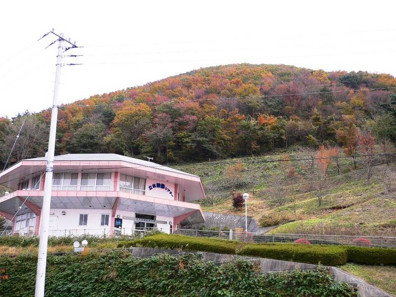

Mount Senganmori
Iino, Fukushima, Japan

A 462-meter hill that locals call a UFO hotspot, with stories of frequent sightings, compasses that won't settle, a hollow-sounding summit, and a theory that it is an ancient artificial pyramid. None of these has been documented. Iino has embraced the legend: a public UFO museum, the UFO Fureaikan, opened on the mountain in 1992, and a town UFO lab that collects sighting reports opened in 2020. 1,2
Open in the interactive Watcher
Sources
- Japan's UFO village, where the magnetic field is said to attract visitors from outer space SoraNews24, Sept. 1, 2024
- Iino, Fukushima Wikipedia